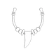
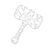
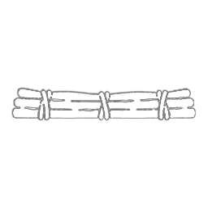

Units
7 player units for the stone age, plus 2 secret-society units and 9 barbarian & naval units.
Player units
Great Hunting Party
A temporary expedition organized by the Great Hunt project. It can hunt any target prey belonging to your civilization, then carry the carcass to any city you own.
Shaman
A Prehistoric-era support unit. Its sight is not blocked by hills or Woods, and it grants +10 HP healing to adjacent friendly units. By spending 1 charge, it can instantly heal units on and around its tile, or reveal the area around a distant spot. Can only be purchased with ✨ Faith.
Becomes obsolete with the Theology civic.
Supply Bundle
A stored bundle of tools and raw materials. Unpack it in its city of origin, or after Chiefdom redistribute it from another city you own. It is consumed when its Production is granted.

Tribesperson
A Builder unit that can create Prehistoric-era tile improvements. It can also remove terrain features such as Woods, or Harvest resources. The Tribesperson has two build charges. These can be increased by researching Ground Stone Tools.
Becomes obsolete with Bronze Working.
Pathfinder
A Prehistoric-era recon unit, the forerunner of the Scout.
Forager
A Prehistoric-era forager that can build Foraging Camps or gather a variety of yields from resources. It can also remove terrain features such as Woods, or Harvest resources. The Forager has two build charges. These build charges can be increased by researching Pottery.
Becomes obsolete with Bronze Working.
Dugout Canoe
Prehistoric era melee naval combat unit, the forerunner of the Galley. Can only operate on Coastal waters until Cartography is researched.
Spirits of Fire and Stone units
Units from the Fire & Stone secret society (requires the Secret Societies game mode).
Emberwright
Support unit unique to the Spirits of Fire and Stone. It is created carrying 1 Ember, and when granted by an Athanor it carries 1 more for each Baetyl Crater in that city. Spends 1 Ember to transform an adjacent land military unit you control into one of the Forged. It is lost when its last Ember is spent.

The Forged
Combat unit unique to the Spirits of Fire and Stone. Created when an Emberwright Reforges a land military unit you control; it cannot be trained directly. Its ⚔️ Combat Strength updates with the era so it never falls behind, and grows with the number of Baetyl Craters in your empire. It cannot earn experience or gain promotions.
Barbarian & naval units
Barbarian Warrior
Stone Age primitive warrior.
Barbarian Spearman
Stone Age primitive spearman.
Barbarian Raider
Stone Age primitive raider on foot.
Barbarian Slinger
Stone Age primitive slinger.
Barbarian Hunter
Stone Age primitive hunter on foot.
Barbarian Marauder
Stone Age primitive coastal raider on foot.
Barbarian Canoe
Stone Age primitive war canoe.
Barbarian Harpooner
Stone Age primitive coastal harpooner on foot.

Barbarian Raft
Stone Age primitive harpoon raft.
Modified base-game units
Existing Civilization VI units the mod re-gates so the tech tree lines up with the new era — the Settler, Warrior, Slinger and Scout move into the Prehistoric era, while the Builder is pushed later so the Tribesperson covers the stone age.